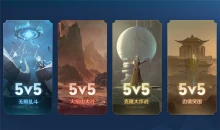
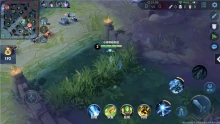
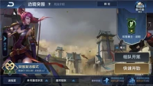
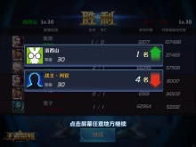
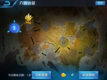

《王者荣耀》是由腾讯游戏天美工作室群开发并运行的一款运营在Android、IOS、 NS 平台上的MOBA类 国产手游 ，于2015年11月26日在Android、IOS平台上正式公测，游戏前期使用名称有《英雄战迹》、《王者联盟》。《 传说对决 》（Arena Of Valor），即《王者荣耀》的欧美版本于2018年在 任天堂Switch 平台发售。[1]
王者荣耀中的玩法以竞技对战为主，玩家之间进行1VS1、3VS3、5VS5等多种方式的 PVP 对战，还可以参加游戏的冒险模式，进行 PVE 的闯关模式，在满足条件后可以参加游戏的 排位赛 等，是属于推塔类型的游戏。
1.游戏背景
编辑神明乘坐方舟穿越无边的宇宙，降临王者大陆。他们利用宇宙最强大的力量——方舟核心，将传奇英雄的基因注入新人类，创造了那些为人熟知的英雄。依靠方舟核心，十二座奇迹拔地而起，昭示着那个时代的荣光。
然而无上的力量滋生欲望，欲望带来战争。暗夜笼罩大陆，奇迹的光芒被掩映。为了防止战争再次降临，神明将方舟核心封印在长安大门之后，留下隐秘的暗示——解封方舟核心的线索，蕴藏在十二奇迹之中。
堕世之神窥伺着方舟核心——这一能够让他重获新生的绝世力量。为了守护王者大陆的和平，英雄们踏上解封方舟核心的道路。生存或者毁灭，前路风云变幻，但抵挡不了他们的脚步。出征吧，英雄们。
2.角色设定
编辑游戏正式服（安卓和IOS平台）已经出了105位英雄，定期也会推出新的英雄，英雄定位可分为法师、战士、坦克、刺客、射手、辅助，不同的英雄拥有不同的属性和技能。每个英雄都有多个主动攻击技能和1个被动技能，在匹配模式下，玩家可以使用周免英雄、体验卡英雄和已经购买的英雄参加战斗。
3.物品道具
编辑3.1.武器装备
游戏中的武器装备分为物理攻击、法术攻击、防御装备、移动装备和打野装备，游戏中的道具有铭文碎片、英雄碎片、皮肤碎片，游戏中还为英雄提供了皮肤装饰，每个皮肤都均有一定的属性。
在对战游戏开始后，玩家可以购买低级装备，随着金币的增加，玩家可以根据金币的数量购买需要的高级装备，每个英雄在一局对战中，最多只能购买6件武器装备，每局对战开始时，玩家可选择相应的皮肤。游戏的中铭文碎片可以制造相应的铭文，够数量的英雄碎片足可兑换相应的英雄，足够数量的皮肤碎片可以兑换相应的皮肤。
3.2.消耗品
在手游中，背包系统中包括道具、礼包、铭文三类，玩家获得这三类物品都会在背包中显示，道具有活动材料、英雄碎片、皮肤碎片、限时英雄体验卡、限时皮肤体验卡、多倍经验和金币卡、喇叭等，铭文中有一到五级的铭文，铭文等级越高，属性越强，玩家可以根据英雄的定位选择相应的铭文搭配，铭文可增加英雄相应属性。
4.游戏地图
编辑游戏正式服（安卓和IOS平台）已经出了105位英雄，定期也会推出新的英雄，英雄定位可分为法师、战士、坦克、刺客、射手、辅助，不同的英雄拥有不同的属性和技能。每个英雄都有多个主动攻击技能和1个被动技能，在匹配模式下，玩家可以使用周免英雄、体验卡英雄和已经购买的英雄参加战斗。
5.特色系统
编辑5.1.活跃度系统
在《王者荣耀》中活跃度系统作为玩家快速获取金币和经验的途径也是非常重要的。玩家只需要根据大厅妲己提示，完成指定任务，即可获得任务奖励金币和经验。从而可以购买道具和强力英雄来共同作战，让玩家的各种能力得到更快的提升，同时解锁更多新功能。
5.2.玩家团队
-
战队系统
《王者荣耀》游戏中，玩家满足条件后就可以创建属于自己的战队，玩家花费50点券的创建费用就能进入战队筹备状态，其他玩家可在筹备列表中查看处于筹备期的战队，在筹备期内征集到足够的响应值则创建成功。成功后。创建者担任队长，并从响应者中产生2名副队长。队长、副队长可以邀请好友加入战队，只需好友同意方可加入成功。队员可推荐好友加入战队，推荐后若队长或副队长同意，便会向该好友发送入队邀请。战队成员在参加实战对抗、天梯赛时，可获得结算金币收益加成。战队人数上限越高，加成比率越高，最高可达50%。
-
好友系统
好友系统是玩家交流和组队游戏的平台，通过好友系统，玩家可以在游戏中添加别的玩家为自己的好友，玩家在竞技时可以通过好友系统快速要求自己的好友组队，好友之间经常组队竞技会积累亲密度，亲密度满足一定条件后，玩家之间可以建立基友、情侣等关系。和好友相对应的就是黑名单，添加到黑名单的玩家就不能一起组队竞技。
-
师徒系统
游戏中的玩家可以建立师徒关系，玩家在没有师傅的情况下，只要满足条件就可以拜等级在21~30级排位段位在黄金3及以上的玩家为师，玩家通过向其他玩家发出申请，申请被接受后师徒关系建立，师父收徒的数量有一定的限制。拥有师徒关系的玩家在组队进行对战游戏时会有相应的师徒奖励，师父和徒弟完成师徒任务后也会有相应的奖励。
5.3.召唤师技能
召唤师技能是游戏中的一个技能，每个玩家都有一个独立安放召唤师技能的技能栏，玩家可以根据自己的英雄定位选着不同的召唤师技能。召唤师技能使用后会计算CD，不需要任何消耗手段在王者峡谷、长平之战等地图上还有一个固定的技能栏，该技能是回血技能，使用后可回复血量，不可替换其他技能。竞技过程中还有一个回城的技能栏。召唤师技能是每个玩家只要满足条件就有的，区别于英雄技能。
5.4.成就系统

玩家在游戏内探索模式、对战模式等多种模式中可以达成不同的成就；达成成就可以积累成就点数，参与全区成就点排名。每达成一个成就都会获得相应的钻石奖励。游戏内有近300个成就等待着你去探索。
5.5.铭文系统
铭文系统的主要作用是：强化召唤师的各项能力。各位召唤师可以在商店中根据自己操作英雄的类型和追求，选择不同的铭文来为自己的英雄基础属性提供加成效果；并在游戏外的铭文系统（类似天赋系统）中对购买的铭文进行镶嵌搭配设置。铭文共有五种等级，分别是一级（Ⅰ）、二级（Ⅱ）、三级（Ⅲ）、四级（Ⅳ）和五级（Ⅴ），等级越高，铭文的属性越强，在铭文界面共计30个槽位，分为蓝色槽、绿色槽和红色槽，分别放置对应颜色的铭文，在铭文类型中有攻击、生命、防御、功能、吸血、攻速、暴击、穿透，在这些铭文类中我们需要搭配带有属性的是暴击率、法术穿透、物理护甲穿透、攻击速度、冷却缩减、暴击率、暴击效果。针对不同的阵容、不同的战术以及部分英雄的多发展方向性，玩家也是可以考虑进行其他更加细化、更加优秀的铭文配备方式，这也是铭文系统带给所有玩家的游戏乐趣。
5.6.VIP系统
《王者荣耀》游戏中贵族系统共分10级 [20] ，玩家通过充值获得点券，消费点券获得积分，积分达到一定的数量，就可以获得贵族，不同等级的贵族，有不一样的特权。玩家消费点券才能获取贵族积分而不是充值点券，而且贵族等级是需要每个月通过消费点券来维持和激活的，并非永久拥有。专属特权主要是三个方向——专属贵族徽章、贵族头像框和专属聊天字体颜色。贵族徽章比较明显的显示就是在游戏读取界面上，有一个鲜艳的数字，可以清楚的看到每玩家的贵族等级。贵族头像框就是在我们的头像上加了一个炫酷的框，无论是好友、战友，还是路人和旁观者都能看到专属边框。聊天字体自然就是让贵族拥有特殊的字体。
5.7.对战系统
玩家通过体验排位竞技模式，可以获得排位数值、排位段位以及对应使用英雄的熟练度，并且玩家将会根据获得的排位段位情况被分到一个排位战区、并由玩家在不同战区的成绩可获得倔强青铜、秩序白银、荣耀黄金、尊贵铂金、永恒钻石、至尊星耀这六个称号，问鼎排位赛的是最强王者。
王者峡谷游戏规则有匹配、排位赛等对战，均在地图王者峡谷举行。 匹配模式，5VS5组队通过系统匹配我方5个玩家与敌方5个玩家进行战斗，与电脑端MOBA游戏保持高度一致。该模式包括实战对抗，人机练习。 排位赛只能玩家5VS55组队对战，5VS5模式为三路对线模式，玩家可根据英雄搭配选择不同的战略、战术。开局30秒后，野区将刷出中立生物。包括苍蓝石像、绯红石像、大小龙。击杀可获得增强我方实力的强力buff、经验及金钱。获得局内金币后，可以通过局内道具系统购买道具。不同的道具具有不同的效果，可以增强英雄的能力。当一方摧毁对方的水晶基地后即可获得胜利，胜利后获得金币、经验、英雄熟练度奖励。
深渊大乱斗游戏规则是玩家5VS5组队对战，5VS5组队通过系统匹配我方5个玩家与敌方5个玩家进行战斗，与电脑端MOBA游戏保持高度一致。该模式包括实战对抗，人机练习。 5VS5乱斗模式地图为一条狭长的深渊地图，只有一条线，没有上下野区。比赛开始后，系统会在玩家已经拥有的以及本周免费的英雄当中随机选择一个，每一局玩家都有一次免费的机会可以再进行英雄随机。初始等级为2级，玩家拥有2个技能点可供分配。获得局内金币后，可以通过局内道具系统购买道具。不同的道具具有不同的效果，可以极大的增强英雄的能力。当一方摧毁对方的水晶基地后即可获得胜利，胜利后获得金币、经验、英雄熟练度奖励。
长平攻防战游戏规则为玩家或人机3VS3组队对战，3VS3组队通过系统匹配我方3个玩家与敌方3个玩家进行战斗。该模式包括实战对抗，人机练习。 开局一分半钟后，野区将刷出中立生物暴君。击杀暴君能获得增强我方全体实力的强力BUFF，第三次击杀暴君后可获得更多属性。当一方摧毁对方的水晶基地后即可获得胜利，胜利后获得金币、经验、英雄熟练度奖励。
墨家机关道游戏规则为玩家或人机1VS1对战，1VS1组队通过系统匹配我方1个玩家与敌方1个玩家进行战斗。该模式包括实战对抗，人机练习。 当一方摧毁对方的防御塔后即可获得胜利。
火焰山大战是游戏的一种对战模式，开放时间有限制，对战地图为岩浆地图，对战开始后，英雄是随机分配，地图上无兵线，无防御塔，每个英雄新加一个能发射火球的技能，火球打到对手后会造成一定的伤害，并有一定的击退效果，地图上的熔岩对所有的英雄可带来伤害。整个比赛倒计时10分钟，以双方各队击杀的人头数多少作为判断输赢的标准。如果优先击杀30人，可提前判断为胜利
克隆大作战是游戏的一种对战模式，开放时间有限制，对战地图为王者峡谷地图，玩家进入选英雄界面后，不同玩家可以选择同一个英雄，根据玩家选择的英雄的占比最终确定所有玩家使用同一个英雄，属于5VS5对战，红蓝双方可以使用相同的英雄，如果没有选定好英雄，系统会为玩家随机一个英雄。竞技方式和5VS5王者峡谷类似，推到对方的水晶后即可获胜。
五军对决是五阵营混战的全新玩法，每个阵营2个人。地图上有属于不同阵营的不同出生点，每隔一定时间会有不同的事件发生。击杀敌人可以获得星数，一局游戏将进行8分钟，时间到达后会按队伍星数排名结算。尽量考虑优先击杀星星比较多的队伍，这样获取的分数也就更高。当自己队伍分数落后时，注意走位和策略，多围剿高星的敌方英雄，可以瞬间扳回劣势 [22] 。
无限乱斗是游戏的一种对战模式。游戏开始后，每隔两分钟，地图上会随机刷新不同的地图BUFF，并在屏幕右上角给出提示。BUFF效果随机出现，玩家需要及时根据BUFF效果调整自己的玩法。相比5VS5王者峡谷，无限乱斗模式节奏更快。
迷雾模式是游戏的一种对战模式。在迷雾模式中，5VS5对战的主战场王者峡谷不再清晰可见，地图中布满迷雾，让玩家无法第一时间发现敌人的踪迹。迷雾范围内的视野玩家不可见，必须要移动到该位置才能探测到具体情况，同样，隔着墙和草丛无法看到另一面的事物。迷雾模式中，设置了监视守卫和扫描卫士两种特殊的道具供召唤师使用。玩家的天赋能力是拥有监视守卫功能，即可释放该能力在地图上插眼看到迷雾之中的情况；也可以通过商店替换成扫描卫士，扫描附近敌方的眼，清除敌人布置的视野。
2017年6月13日更新后，迷雾模式入口从匹配模式中移至娱乐模式，不定期开放
契约之战是游戏的一种对战模式。在王者峡谷中，召唤师在同一局内可以选定两个不同英雄。在战斗对局中，可以根据对局需求瞬间切换英雄，操作出不一样的套路。主控英雄和备选英雄各自技能的冷却时间是完全独立的，可以通过两套英雄技能，持续输出，掌控全局。模式中会有新增的平衡buff，增加一定的韧性，降低一定的输出。
边境突围是游戏的一种对战模式。该模式由100名召唤师参与，召唤师们可以单人或者组队，在约150个王者峡谷地图大小的全新战场上进行相互对抗。边境突围玩法保留了“英雄、技能与左右轮盘”这些熟悉的体验，结合超大型开放地图，让召唤师们可以操作英雄，跟随着沙尘暴的移动，在不断变化的战斗区域中进行打怪、升级，并能拾取技能/装备进行对抗。最终击败藏匿在沙尘暴中心的湮灭之眼BOSS的召唤师与他的队伍则为获胜方。
5.8.冒险模式
挑战模式提供不同难度的挑战关卡。该模式下，玩家可以挑战强大的英雄与BOSS，以及了解游戏故事背景以及英雄传说，通关后获得经验、金币、铭文等相应奖励，铭文只有第一通关才能获得。挑战模式分为：普通、大师三个难度等级供玩家挑战，并且难度依次增加。玩家挑战某一难度关卡胜利后，会依次解锁下一关卡；大师难度下，玩家将面对大量拥有特殊技能的怪物。玩家挑战任意一关卡成功且达到三星条件，还可获得额外奖励；若挑战过程中本方某一队友死亡，可在脱离战斗后点击头像将其复活，每个英雄拥有三次复活机会。
武道大会是《王者荣耀》独有的竞技场玩法，玩家可以选择手动或自动战斗的方式和其他玩家进行PK。玩家可以在武道大会上挑战比自己排名更高的玩家。若挑战成功，则双方名次对调；若失败或超时，则挑战方失败且名次不变；挑战胜利后可以立刻挑战下一对手，挑战失败后则需要等待5分钟才能再次进行挑战。武道大会每日限定挑战次数，并在次日重置。每晚会进行单区排名结算，发放奖励。根据排名，结算后玩家将获得不同数量的武道币奖励。武道币可在武道商店购买相应的奖励。
玩家使用英雄组成队伍参加六国远征，通过挑战多轮战斗赢取相应奖励。六国远征模式一共包含六轮战斗。玩家将从拥有的英雄中组成队伍进行连续挑战；开战前玩家可自主选择祝福增强自身实力；远征通关过程中英雄血量是继承的。拥有更多英雄有助于玩家在远征中走得更远。
6.游戏收入
编辑2020年11月，《王者荣耀》在全球App Store和Google Play吸金2.3亿美元，其中来自中国大陆App Store的收入占96.4%，台湾地区版本贡献了1.4%，泰国版本贡献了1%。
2020年12月，《王者荣耀》在全球吸金2.58亿美元，来自中国大陆的收入占96%，台湾版本贡献了1.4%，泰国版本贡献了1.2%
2021年1月，《王者荣耀》在全球App Store和Google Play吸金2.67亿美元，蝉联全球手游畅销榜榜首 [28] 。来自中国大陆的收入占97%，泰国版本贡献了1%
2021年2月，《王者荣耀》以2.18亿美元的收入位列全球手游收入榜单第二名，来自中国大陆的收入占95.6%
7.配置要求
编辑8.游戏评测
编辑8.1正面评价
《王者荣耀》是将端游MOBA在移动端上进行相应的还原呈现，打造了5v5王者峡谷和大乱斗模式，10人线上对抗，互拼操作技巧与团队配合，推塔、补兵、五杀、团战均可体验。玩家在王者峡谷可以三路争锋，还能打野夺龙等。另外，《王者荣耀》的战场就在移动端手机上，可以让玩家不分时间、不分地点，只要想战，随时都能开黑打团，竞技对战更方便更快捷。
作为手机上的英雄对战游戏，《王者荣耀》同时具备多人实时竞技的5V5、3V3和1V1模式，能满足了不同玩家对战需求——其中，5V5大战还原了端游MOBA玩法，承载10名玩家共拼操作与配合。《王者荣耀》游戏中拥有诸多英雄人物，每一个都相应的特色，当玩家们操纵英雄们聚集在一起时，一场大战在所难免。
8.2负面评价
一家企业，一种游戏，如果只想着赚钱，身上没有责任和道德的血液，不去谨小慎微地衡量可能的社会影响，注定是跛足的，注定走不远。是的，游戏并不是洪水猛兽，不是鸦片毒品，没有天然的原罪，但如果在保护未成年人上缺乏担当，就罪不可赦。是的，游戏也有它的社会意义，如设计人所称：作为一个游戏人，我的志向是有一天能做出传递爱，传递幸福的游戏，因为我确信，爱和幸福是比简单的快乐更高的情感满足。――但如果让未成年人沉迷其中，如果没有解决游戏的道德瓶颈，这种虚无缥缈的所谓幸福，所谓快乐，所谓情感满足，一文不值，令人作呕。
不要装出一副“对造成当下后果毫无准备”的无辜模样，一家以做游戏为业的企业，成功推过那么多游戏，深谙用户的年龄结构和心理弱点，应该能够预判到一款这样的游戏可能产生的社会问题。而且，这款游戏也不是一夜之间火起来的，火遍大江南北经历了一个过程――这个逐渐火爆、逐渐让很多未成年人沉迷的过程中，相关企业又做过什么，设计和推广游戏是一件需要良心去做的事。
谈到环境治理和污染防治时，人们常说，不要走西方先污染再治理的老路。同样，在游戏的负效应控制上，也不能走“先火爆再防沉迷”的老路。游戏设计者和推广者，有没有这样的问题意识，有没有带着对未成年人的关怀意识，有没有带着幼吾幼以及人之幼的同情同理心去开发产品。这真算不上什么“穷尽努力无法想象”的新问题，如果设计的时候少点儿功利心，少点儿急切的赚钱冲动，多一点儿责任意识，流淌一点儿道德血液，就会在设计起点上多点儿防沉迷安排。保护未成年人的防沉迷设计，应该成为每款游戏的道义门槛。
是的，假如设计之初就有防沉迷考虑，游戏可能就没这么火爆了，玩得人就没这么多了，也可能成就不了爆款。――但带着道德缺陷的爆款，只会让人鄙视。平时嘴上喊再多的“社会责任感”都没什么用，暴利诱惑下的选择，最能检验一家企业的三观和血液中的社会责任含量。这关系到的不仅是一款游戏的社会评价，更关系到一家企业的公共形象，一个企业，如果利润中有不道德的成份，注定不会成为真正让人尊敬的企业。
9.游戏成就
编辑2016年11月，《王者荣耀》荣登2016中国泛娱乐指数盛典“中国IP价值榜-游戏榜top10”。
2018年11月24日，王者荣耀在2018中国科幻大会上获得最佳科幻游戏奖。
10.游戏事件
编辑10.1外挂判刑
2018年7月，江苏省江阴市法院宣判全国首例《王者荣耀》游戏外挂的入刑案件。
游戏外挂的制作者谢成、王超一分别被上述法院以供侵入、非法控制计算机信息系统程序、工具罪判处有期徒刑一年零三个月和一年，并处2万和3万元罚金。
10.2健康系统
2018年9月15日，《王者荣耀》健康系统启动升级，接入公安权威数据平台，对于所有新用户进行最严格的实名校验 [29] 。2018年10月25日，腾讯再次升级“《王者荣耀》健康系统”，以北京地区为起点，正式启动《王者荣耀》全部用户的强制公安实名校验，未通过校验的游戏账号将禁止登录。同时，为杜绝未成年人“玩小号”的问题，一个未成年人实名信息仅允许用于微信和QQ平台各一个游戏账号的校验。 [3] 11月29日，王者荣耀升级人脸识别验证 [4] 。2020年5月15日起，游戏限制未成年用户玩游戏的时间，并对未成年用户设置消费限制